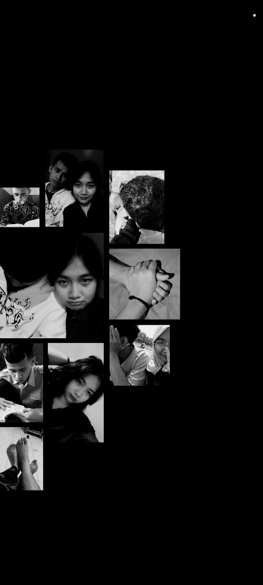
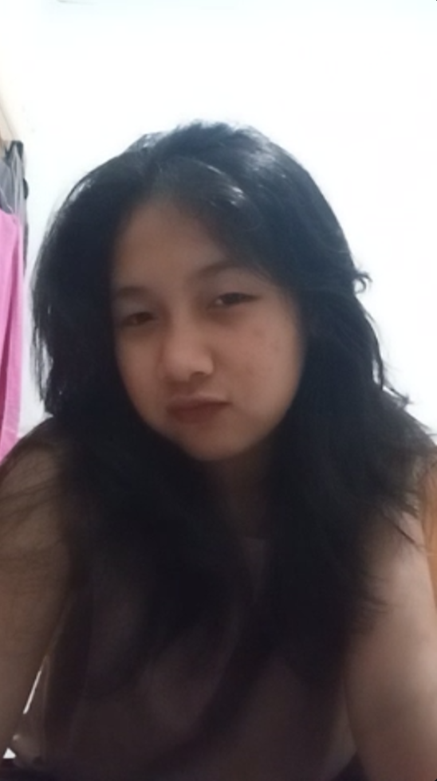
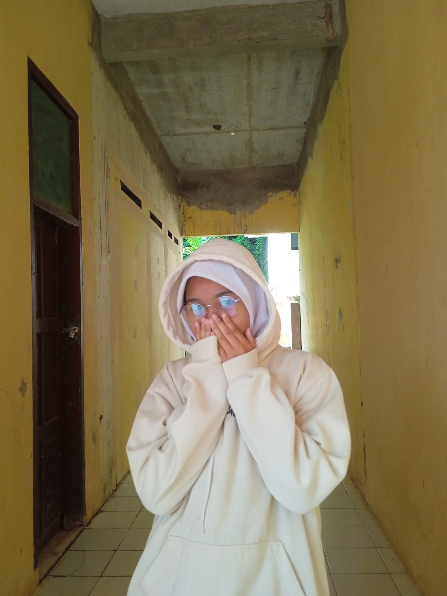
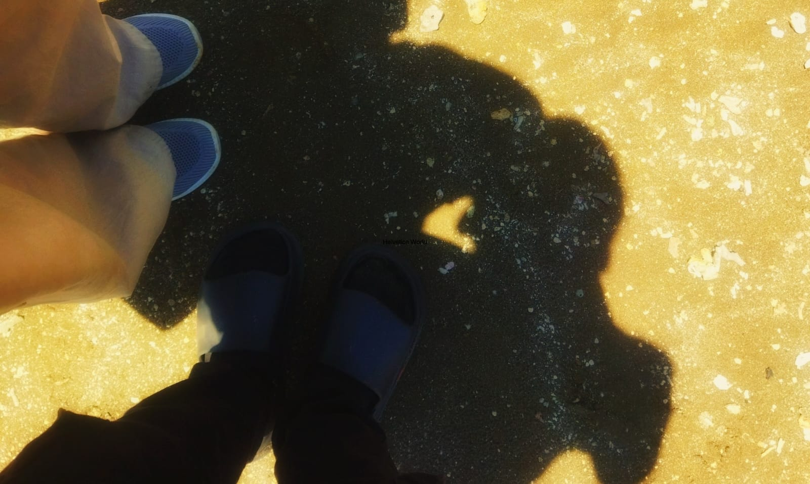

untuk kamu yang selalu ada
Nisa — 💜
Ga kerasa ya... sudah dua tahun kita menjalani hubungan ini. Dua tahun yang penuh warna — tawa, tangis, diam, dan rindu yang datang silih berganti. Susah senang kita lewati bersama, dan di setiap langkahnya aku bersyukur ada kamu di sisi ku. Untuk semua yang sudah dan akan kita jalani, terimakasih, Nisa — tetap kuat ya, selalu.
Mulai Perjalanan ↓
Kamu tau waktu awal-awal kita menjalani hubungan ini? Ada banyak hal-hal kecil yang ku lakukan untukmu,yang bahkan tanpa aku sadari sendiri. Dan begitu pun sebaliknya, kamu melakukan hal yang sama.
Yang membuatku kagum adalah ekspresimu. Cara kamu bereaksi terhadap kata-kataku(salah tingkah), sedikit malu, tapi ada senyum yang berusaha kamu sembunyikan. Ekspresi itu masih tersimpan sangat jelas di pikiranku, seperti foto yang tidak pernah pudar.
Awalnya aku berpikir: kenapa responnya bisa seperti itu? Karena aku tidak merasakan hal yang sama saat itu, bukan berarti aku tidak senang, justru sebaliknya. Aku sangat senang. Sekarang aku mengerti alasannya: aku belum pernah diperlakukan seperti itu sebelumnya, jadi perasaan itu terasa baru dan asing tapi menyenangkan. Indah sekali masa-masa itu.

Selepas kita lulus sekolah dan mulai masuk ke dunia kerja, segalanya berubah. Tidak ada lagi jadwal yang terstruktur, tidak ada lagi rutinitas yang pasti. Dunia terasa lebih besar dan sekaligus lebih menyempitkan dada.
Masalah datang dari segala arah — tekanan pekerjaan, ekspektasi yang belum terpenuhi, lelah yang tidak bisa sepenuhnya diungkapkan. Di dalam hubungan kita pun, jarak dan kesibukan kadang membuat komunikasi terasa renggang, salah paham datang tanpa undangan, dan ego masing-masing terkadang lebih keras dari hati.
Belum lagi masalah pribadi yang kita bawa masing-masing — luka lama yang belum sembuh, ketakutan yang belum diceritakan, dan mimpi-mimpi yang terasa semakin jauh. Ada hari-hari di mana kita diam bukan karena tidak peduli, tapi karena terlalu lelah untuk berkata-kata.
Tapi di semua itu — kita masih saling percaya. Dan itu sudah lebih dari cukup untuk terus bertahan.
Seru sekali waktu kita sering jalan-jalan — baik itu dekat maupun jauh. Ingat waktu kita motor-motoran hanya untuk cari makanan baru yang belum pernah kita coba? Ujung-ujungnya kita malah beli yang biasa kita beli juga. Tapi perjalanannya — itu yang selalu kurindukan.
Atau waktu kita ke pantai. Di setiap perjalanan selalu ada saja hal di luar dugaan. Jalanan tergenang air yang lumayan tinggi, celana kita basah, tapi kita tetap melanjutkan dengan tertawa lepas seolah itu adalah bagian dari rencana. Mungkin memang begitu — kita tidak pernah benar-benar merencanakan semuanya, dan justru di situlah keajaibannya.
Kita lebih menikmati perjalanannya ketimbang saat sudah sampai di tujuan. Karena di perjalanan itulah kita benar-benar bersama — tertawa, bercanda, saling menjaga, dan lupa sejenak dari semua beban. Kapan lagi ya kita bisa seperti itu...

Rasanya kalau semua diceritakan, tidak akan pernah cukup. Dari hal-hal terkecilnya saja sudah terlalu banyak yang membekas di hati. Tapi yang paling aku suka adalah obrolan-obrolan malam kita.
Setiap malam kita ngobrol — kadang tentang hal yang penting, tapi lebih sering tentang hal yang sama sekali tidak penting. Tentang sesuatu yang lucu yang kita lihat hari itu, tentang mimpi yang aneh, tentang makanan yang ingin dicoba, bahkan terkadang kita sendiri tidak tau lagi kita sedang membahas apa. Tapi kita tetap berbicara.
Dan di situlah aku menyadari: ngobrol ga penting itu ternyata penting. Karena di balik kata-kata yang tidak bermakna itu, ada kehadiran yang sangat berarti. Ada kamu yang selalu menemani, bahkan di tengah malam paling sunyi sekalipun.
Terimakasih, Nisa. Ga kerasa, 2 tahun sudah kita lewati. Ada begitu banyak warna baru dalam hidupku sejak kamu hadir. Semoga ke depannya semakin baik, semakin erat, dan semoga kita bisa melangkah ke jenjang yang lebih serius bersama.

Di antara semua yang ingin kusampaikan, ada satu hal yang selalu berat untuk kuucapkan tapi harus tetap kukatakan: maaf.
Maaf atas segala salah dan kekuranganku selama ini — untuk setiap kata yang menyakiti, untuk setiap janji yang tidak kutepati, untuk setiap momen di mana aku tidak hadir sebagaimana mestinya. Maaf telah membuatmu menanggung hal-hal yang seharusnya tidak harus kamu pikul sendirian.
Aku sadar aku sudah berubah jauh dari diri yang dulu — entah ke arah yang lebih baik atau lebih buruk, kadang aku sendiri bingung. Yang aku sesali adalah mungkin perubahan itu datang terlambat, saat kamu sudah terlalu lelah menunggu. Saat kamu sudah cukup terluka untuk merasakan bedanya.
Tapi ketahuilah — setiap usaha yang aku lakukan, setiap langkah kecil yang aku ambil untuk menjadi lebih baik, semua itu karena kamu. Karena aku tidak ingin kehilangan seseorang yang sudah menjadi begitu besar artinya dalam hidupku.
Aku minta maaf dengan sepenuh hati, sayang. Bukan karena aku ingin semuanya sempurna — tapi karena kamu layak mendapatkan yang terbaik dariku, dan aku ingin terus belajar memberikan itu untukmu.